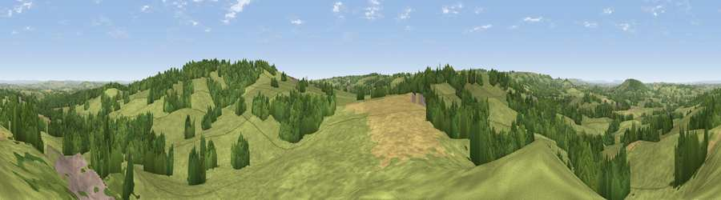

Viewpoint near Evershot
#13785 in England · top 32% of its area beats it · near EvershotThe view, rendered

A 360° render of this exact spot computed from the terrain model, tree cover and land cover — summer colours, afternoon light, calibrated against photographs of famous viewpoints. Real trees, hedges and buildings will differ in detail.
The panorama
Grey silhouette: terrain skyline in each direction (720 bearings, Earth curvature and refraction included). Dashed green: skyline with trees (+15 m) and buildings (+8 m) as obstacles. Blue strip: how far the ground is visible on each bearing.
Where the view opens
Wedge length = distance to the farthest visible ground on that bearing (vegetation-aware). Rings at 10, 25 and 50 km.
What fills the view
69% grassland · 22% woodland · 8% cropland · 1% built-up
Angular shares of the visible panorama (visual magnitude), not map area. Landscape diversity 0.37 (0–1 Shannon).
Key numbers
More beautiful places nearby
The staircase of upgrades: each row has a higher view potential than everything closer. Driving times are estimates from straight-line distance, calibrated against real road routing — check an actual route before setting out.
| Place | Direction | Drive | Score |
|---|---|---|---|
| Viewpoint near Chetnole | ENE · 4 km | ~9 min | 67.4 |
| Viewpoint near Chedington | W · 5 km | ~11 min | 69.7 |
| Viewpoint near Chedington | W · 5 km | ~11 min | 70.7 |
| Viewpoint near Chedington | WSW · 7 km | ~14 min | 71.8 |
| Viewpoint near North Poorton | SW · 7 km | ~14 min | 77.0 |
| Viewpoint near Nettlecombe | S · 10 km | ~20 min | 79.3 |
| Viewpoint near Askerswell | S · 11 km | ~21 min | 81.7 |
| Lewesdon Hill | WSW · 12 km | ~23 min | 83.3 |
50.84615, -2.63806 · source: screening · position refined by local search. Computed location — check access rights before visiting.